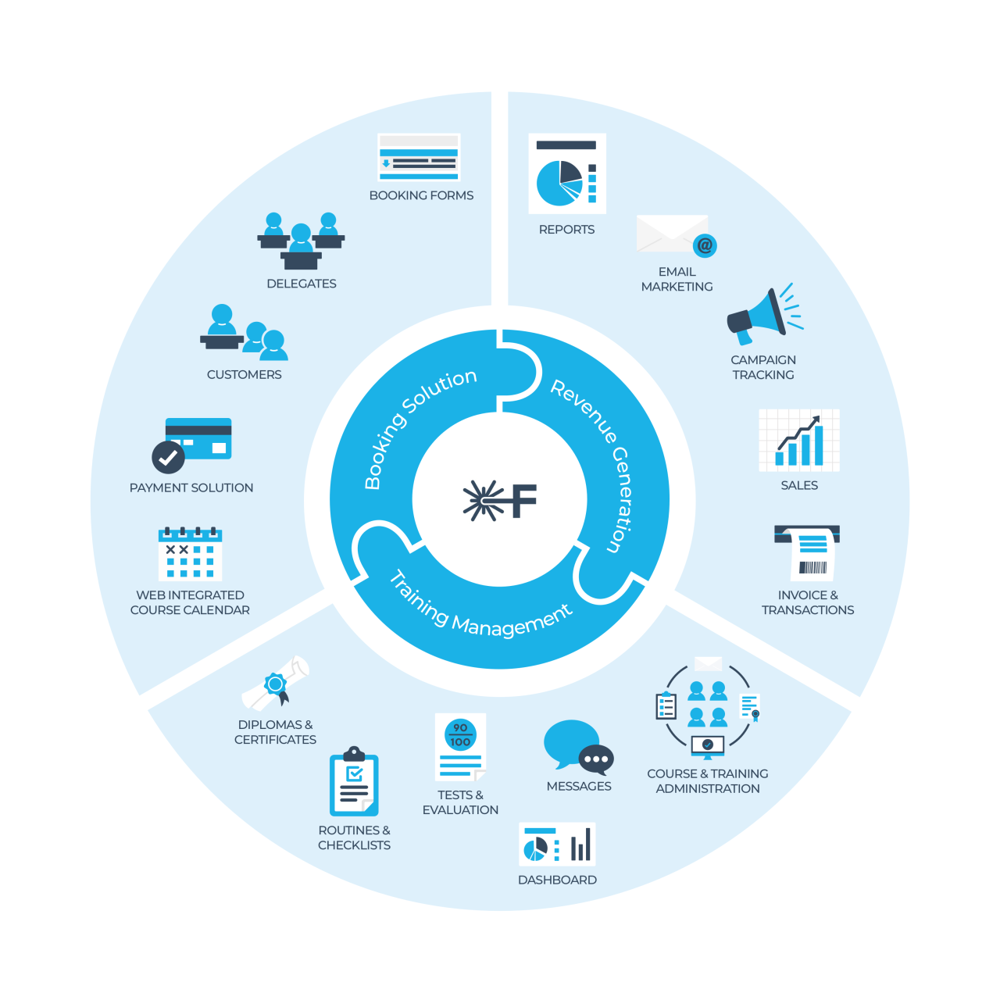
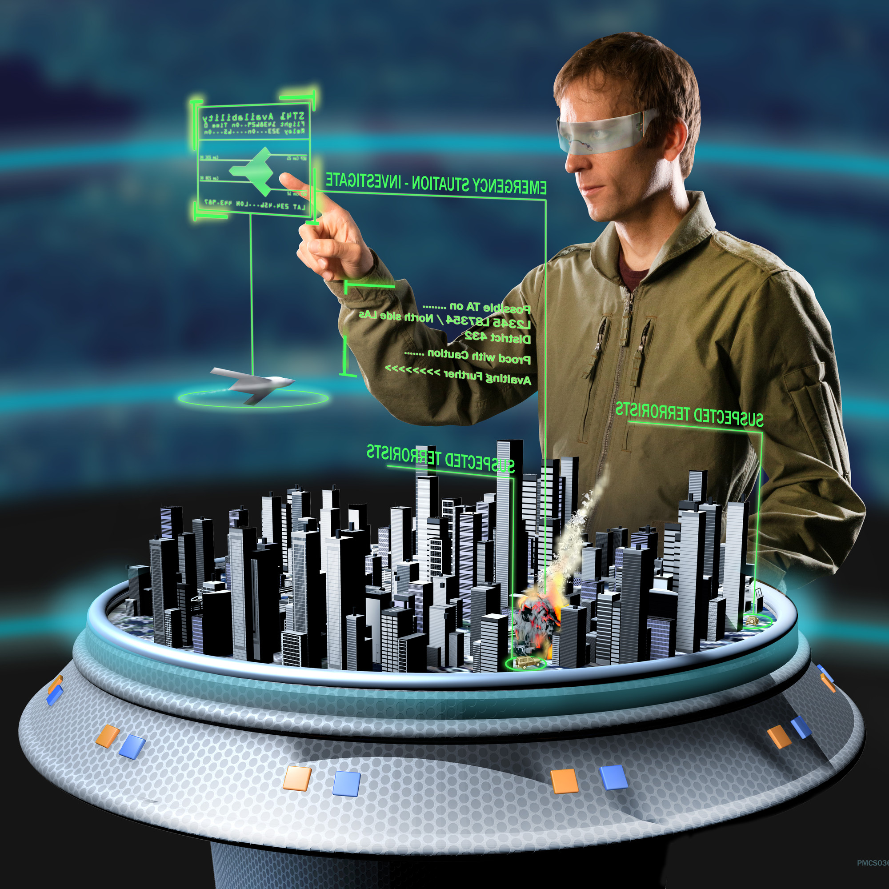
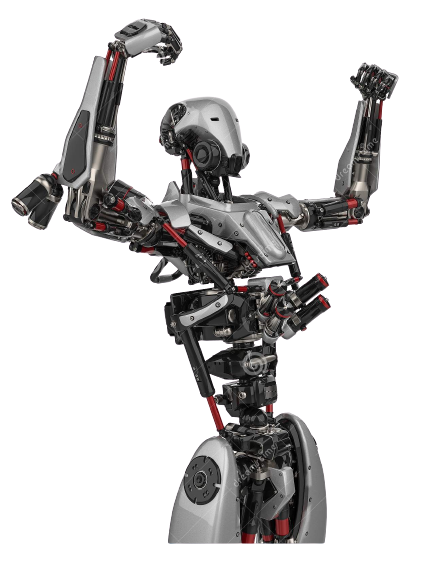
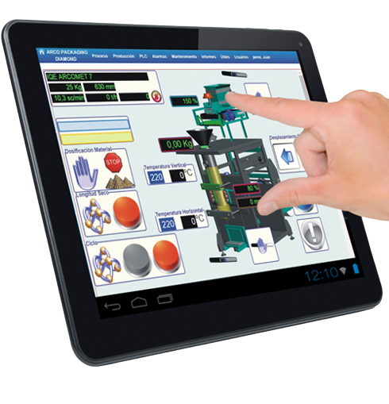

Eye of Hawk
Industry 4.0

Vignesh Chinnasamy
@Viknesh7013
Posts - 310
Followers - 489
Following - 83
Likes - 533
Dislikes - 15
Eye of Hawk .
Top Industry 4.0 Trends in 2022
Industries are reformed in a way that was nowhere seen in history, with new Industry 4.0 manufacturing methods. Every reform is so powerful that these are ruling the present industry now and would be omnipresent in the future. Here are a few trends and marvelous Industry 4. 0 technologies that would define the golden future of Industry 4.0:
Table of Contents
Big Data and AI analytics

In Industry 4.0, Big Data is collected from a wide range of sources, from factory equipment and Internet of Things (IoT) devices, to ERP and CRM systems, to weather and traffic apps. Analytics powered by artificial intelligence (AI) and machine learning are applied to the data in real time – and insights are leveraged to improve decision-making and automation in every area of supply chain management: supply chain planning, logistics management, manufacturing, R&D and engineering, enterprise asset management (EAM), and procurement.
Horizontal and vertical integration
The backbone of Industry 4.0 is horizontal and vertical integration. With horizontal integration, processes are tightly integrated at the “field level” – on the production floor, across multiple production facilities, and across the entire supply chain. With vertical integration, all the layers of an organization are tied together – and data flows freely from the shop floor to the top floor and back down again. In other words, production is tightly integrated with business processes like R&D, quality assurance, sales and marketing, and other departments – and data and knowledge silos are a thing of the past.
Cloud computing

Cloud computing is the “great enabler” of Industry 4.0 and digital transformation. Today’s cloud technology goes way beyond speed, scalability, storage, and cost efficiencies. It provides the foundation for most advanced technologies – from AI and machine learning to the Internet of Things – and gives businesses the means to innovate. The data that fuels Industry 4.0 technologies resides in the cloud, and the cyber-physical systems at the core of Industry 4.0 use the cloud to communicate and coordinate.
Augmented reality (AR)

Augmented reality, which overlays digital content on a real environment, is a core concept of Industry 4.0. With an AR system, employees use smart glasses or mobile devices to visualize real-time IoT data, digitized parts, repair or assembly instructions, training content, and more when looking at a physical thing – like a piece of equipment or a product. AR is still emerging but has major implications for maintenance, service, and quality assurance as well as technician training and safety.
Industrial Internet of Things (IIoT)
The Internet of Things (IoT) – more specifically, the Industrial Internet of Things – is so central to Industry 4.0 that the two terms are often used interchangeably. Most physical things in Industry 4.0 – devices, robots, machinery, equipment, products – use sensors and RFID tags to provide real-time data about their condition, performance, or location. This technology lets companies run smoother supply chains, rapidly design and modify products, prevent equipment downtime, stay on top of consumer preferences, track products and inventory, and much more.
Additive manufacturing/3D printing

Additive manufacturing, or 3D printing, is another key technology driving Industry 4.0. 3D printing was initially used to as a rapid prototyping tool but now offers a broader range of applications, from mass customization to distributed manufacturing. With 3D printing, for example, parts and products can be stored as design files in virtual inventories and printed on demand at the point of need – reducing both transportation distances and costs.
Autonomous robots
With Industry 4.0, a new generation of autonomous robots is emerging. Programmed to perform tasks with minimal human intervention, autonomous robots vary greatly in size and function, from inventory scanning drones to autonomous mobile robots for pick and place operations. Equipped with cutting-edge software, AI, sensors, and machine vision, these robots are capable of performing difficult and delicate tasks – and can recognize, analyze, and act on information they receive from their surroundings.
Simulation/digital twins
A digital twin is a virtual simulation of a real-world machine, product, process, or system based on IoT sensor data. This core component of Industry 4.0 allows businesses to better understand, analyze, and improve the performance and maintenance of industrial systems and products. An asset operator, for example, can use a digital twin to identify a specific malfunctioning part, predict potential issues, and improve uptime.
Cybersecurity

With the increased connectivity and use of Big Data in Industry 4.0, effective cybersecurity is paramount. By implementing a Zero Trust architecture and technologies like machine learning and blockchain, companies can automate threat detection, prevention, and response – and minimize the risk of data breaches and production delays across their networks.
Human Machine Interfaces (HMI)

In historic, industrial settings, humans controlled systems and quality control of a process that started and ended with humans. Industry 4.0, however, demands less work from humans and more work from machines, the caveat being that humans can intervene with the machine to understand, interact with, and alter the automated systems that run it. As a result, human-machine-interface systems have become an integral part of Industry 4.0. HMIs come in many forms, with complexities ranging from control rooms akin to mission control, to small displays that show small amounts of information for a very specific single process. Regardless of the breadth of technology, HMI is a critical part of Industry 4.0; it's the communication bridge between creator and creation.